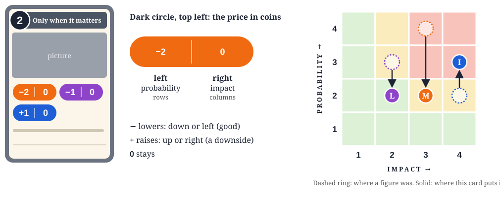
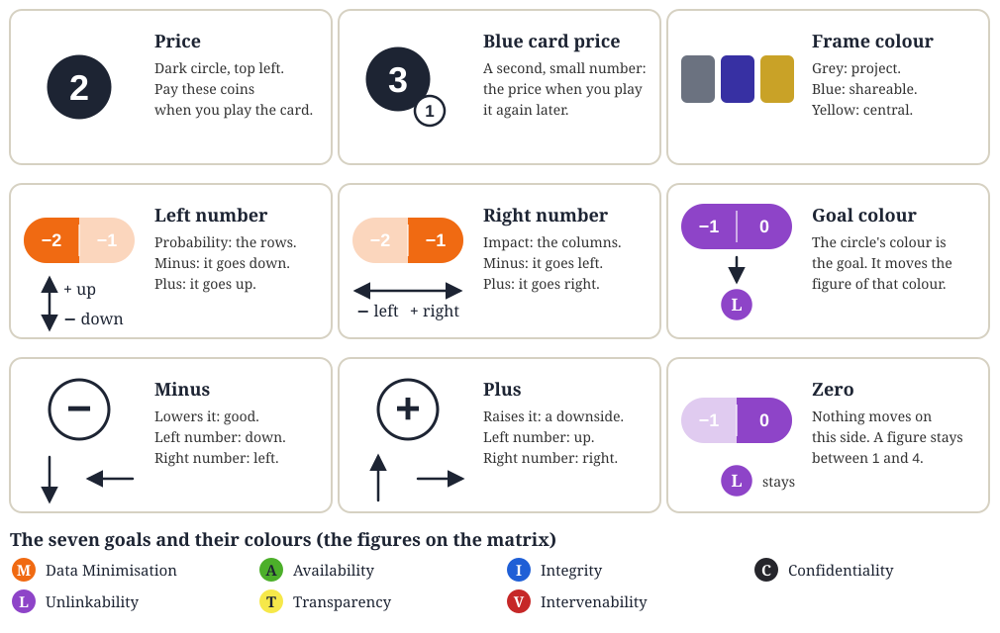

The Data Protection Risk Game: paper version
How long can you stay in business, and which risks can you avoid?
Playtest version. Numbers in [square brackets] are recommendations to try out and to change. Boxes with a blue stripe are optional rules.
1. Introduction and goal
Monday morning, the coffee is hot, and you are ready to take on the world.
Every project arrives with a few ways to go wrong, but you got your measures ready, a purse of coins and a matrix that shows exactly how bad it looks. Your job is to push every risk out of the red, or even better into the green, before the launch date, because someone upstairs has already told the customers it is happening.
That someone is management. Management reads your risk assessment, nods slowly, and then does what it believes. The higher the risk you leave behind, the higher the chance that something goes wrong.
The goal. How long can you keep your business out of trouble, and which risks can you avoid? Bring every risk of a project below High, out of the red, spend your coins wisely, and make it through as many projects as you can. When the coins are gone, so is the business.
Who plays. Two or more teams play at the same time, each running their own business with their own matrices, cards and coins. One more person is the facilitator, who runs the game, plays management and does not run a business. A game is usually about [6] projects, about [45 minutes]. At the end, the teams still in business are ranked by coins left.
How hard is it? The facilitator decides how fat the purse is. They can add or remove some coins to balance things out.
2. Components
What is in the box, and what each part is for. Where it all goes comes in the setup.
- Measure cards. The cards you play to fight risks. They come in three colours.
- Risk cards. The risks that land on a team's desk.
- Event cards. Things that happen along the way.
All three kinds are in one print file, cards.pdf (DIN A4, 3 × 3 cards a page with crop marks). Every second page is the back of the page before. The sheets are packed with nine cards each. The measure cards all have the same back, since they are one draw pile. The risk cards and the event cards each have a back of their own, in their own colour and shape, so you can sort them into their stacks after cutting. Print it double-sided, flipped on the long edge, and cut along the marks. The strategy cards are left out. There is a second file with text only and no pictures, cards-text.pdf, which prints faster and uses less ink.
- Risk matrices. A stack of boards where a risk is fought (PDF, DIN A4).
- Figures. One in the colour of each goal. They show where a risk stands on a matrix.
- Coins. What it costs to play a measure, and what keeps a business alive.
- Dice. A twenty-sided die (d20) for each team and one for the facilitator.
- Player aid. A one-page summary of the rules with pictures, one for each team (page, PDF, DIN A4).
- Facilitator sheet. The table of what goes wrong (page, PDF, DIN A4).

Reading a card and moving a figure

The parts of a card, one by one.

A minus lowers the risk, a plus raises it. Think of it as the change to the number on the matrix.
| On the card | What the figure does |
|---|
| Left number, −2 | Probability goes down by 2: the figure moves 2 spaces down. |
| Right number, −1 | Impact goes down by 1: the figure moves 1 space to the left. |
| Left number, +1 | Probability goes up by 1: the figure moves 1 space up. This is a downside of the card. |
| Right number, +1 | Impact goes up by 1: the figure moves 1 space to the right. This is a downside of the card. |
| 0 | The figure does not move on this side. |
- Look at the first circle and find the figure of its colour on a matrix.
- Move it by the left number along the rows, then by the right number along the columns.
- A figure never leaves the matrix: it stops at 1 at the bottom and left, and at 4 at the top and right.
- Do the same for every other circle of the card, with its own colour.
- Do all of it on every matrix of the project that has a figure of that colour. A risk without a figure of that colour is not affected.
A risk card shows, for each goal it threatens, the colour of the goal and two numbers: probability and impact. They are the space where the figure starts: the row is the probability, the column is the impact.
Why the numbers matter: the row of a figure decides the roll it needs at the end of the project, and its column decides what a failure costs (see the facilitator sheet). The red spaces on the matrix are the ones to leave.
3. Setup
The facilitator, before the game:
- Shuffles the measure cards and puts them in the middle of the table as the draw pile, leaving room next to it for a discard pile.
- Shuffles the risk cards into one stack and the event cards into another, and keeps both next to the draw pile.
- Keeps the facilitator sheet and a d20 at hand.
- Lays a stack of risk matrices and the figures ready, where every team can reach them.
The facilitator, for each team:
- Gives the team a player aid and a d20.
- Gives the team its starting coins, [20] of them. The facilitator can add or remove some.
- Deals the team [9] cards from the draw pile.
The teams:
- Each team picks a processing owner. The processing owner holds the cards and the coins and coordinates with the rest of the team.
4. How the game is played
The structure
The game is played in projects, and a project has one or more risks. The teams take turns to bring the risks down before the time runs out after four turns. At the end of the project, each team rolls the dice and the facilitator checks whether something went wrong.
1. Start of a project
- The facilitator pays each team [10] coins.
- The facilitator turns over one or more risk cards of the project and makes up a bit of a story. Every team faces the same risks.
- Each team takes a risk matrix for every risk and puts a figure on each starting space shown on the risk card. Then each team goes through its yellow cards: every yellow card that stands upright still has to make its moves. Make them on the matrices you have just put figures on, once, as if the card had just been played (a matrix that was moved by a bought DPO gets no more moves of blue and yellow cards), and then turn the yellow card sideways (see Reading a card and moving a figure).
2. A turn
In a turn every team has one action. A card that says "lose one action" costs the team a turn, and a card that says "gain one action" gives it an extra turn.
- Every team does one of the following actions, all at the same time:
- Play a card: the processing owner plays a measure card from the hand, pays its coins and moves the figures on the matrix (see Reading a card and moving a figure above). This ends the team's turn. The played card goes where its colour says:
- Grey (project): onto the discard pile at once, and the team draws a new one.
- Blue (shareable): the team lays it face up and turned sideways next to itself. A blue card can be played once per project: sideways means played in this project. It is still part of the hand and counts for the hand size. At the end of the project the team turns its blue cards upright again. They stay face up, which shows they were played before, so a replay costs the replay price (the small number on the card).
- Yellow (central): face up on the table and turned sideways: sideways means its moves are made in this project. The team draws a new card and makes the moves of the yellow card right away. It stays on the table and keeps working in every later project: at the end of each project the team turns its yellow cards upright again, and at the start of the next project an upright yellow card means its moves are still to make (see part 1).
- Swap cards: the processing owner puts up to [5] cards from the hand on the discard pile (not the blue cards lying sideways) and draws the same number from the draw pile. It is free and ends the team's turn.
- The facilitator draws an event card and reads it out. It affects all teams and does what the card says.
When the draw pile is empty, the facilitator shuffles the discard pile to make a new one.
Optional rule: explain it creatively. When a team plays a card, the processing owner explains, as creatively as they can, why this measure works perfectly here. The facilitator judges the explanation. What a good explanation earns is still open.
3. End of a project
The project ends after the last turn (events can change the number of turns).
Optional rule: call in the DPO, before the roll. This comes first, before any team rolls. Only for a high risk: a team with a figure in the red may pay [1] coin and appoint a data protection officer (DPO). The DPO makes an argument to the facilitator why the project must be stopped. The facilitator rolls the d20 in secret and decides whether management buys it. This is decided in each case. If it does, the project moves to the next round: the team keeps its matrices and figures and gets another chance for mitigation, with the full number of turns, and has no roll and no check this time. The round still ends: the team turns its blue and yellow cards upright again. Blue and yellow cards are not played on a project that was moved this way: only grey cards move the figures of its matrices. The project is extra to the new risks of the next round, and the new risks are revealed for all teams as usual. The next round starts as usual, including the coins. The coin for the DPO is not refunded. If management does not buy it, the team goes on with the roll.
- Roll. Each team rolls the d20 once.
- Check. The facilitator checks the figures on the team's matrices. A figure fails if the roll is too low for its probability row (see the facilitator sheet).
- Pay. For every failed figure the facilitator names the cost for its impact and makes up what happened. The processing owner pays. A team that cannot pay is out of business.
Optional rule. The team may instead make a convincing argument to management why it was not their fault, and management, played by the facilitator, may cover some or all of the fee.
- Next project. Each team turns its blue cards and its yellow cards upright again. The blue cards stay in the hand, the yellow cards stay on the table, all face up. If it was not the last project, the next one starts with part 1.
5. End of the game and score
- The game ends after the last project, or for a team when its coins run out.
- Teams still in business at the end are ranked by coins left. A team whose coins ran out ranks below them, by the number of projects it lasted.
6. Player aid and facilitator sheet
Both are one page each, with pictures, and are made to be printed on DIN A4.
- Player aid, one for each team: page, PDF. It shows the flow of a project, the turn, the three card colours, the matrix and the end-of-project roll.
- Facilitator sheet, for the facilitator: page, PDF. It shows the facilitator's jobs, the roll a team needs for each probability, the cost and the story for each impact, and the optional DPO.
- Trainer script, for the person who trains facilitators: page, PDF, DIN A4. A pretend play with two teams, fixed hands and fixed draws, one big page for every turn (made for a shared screen): the hand, the card that is played, what happens, and the figures and coins after it. Every rule of this book appears in it once.
Appendix: an example project
Team Otter faces one risk. The black figure (Confidentiality) starts at probability 3, impact 3, in the red.
- Start. The facilitator pays Team Otter [10] coins, turns over the risk card and tells a short story about it. The team puts the black figure on its starting space. Team Otter has no yellow card on the table yet, so there is nothing more to move.
- Turn 1. Team Otter plays a grey measure card that lowers probability by one. The processing owner pays its coins, moves the black figure from probability 3 to 2 and puts the card on the discard pile. The team draws a new card. The facilitator draws an event card and reads it out.
- Turn 2. The team plays a blue measure card that lowers impact by one. The black figure moves to impact 2, out of the red. The card lies face up and sideways next to the team, still part of its hand, and the team does not draw.
- Turns 3 and 4. The team uses them the same way: it swaps cards in turn 3 and plays one more measure in turn 4.
- End. Team Otter rolls its d20 and gets a 6. The black figure stands at probability 2, which needs an 8 or above, so it fails. Its impact is 2, so the cost is 4 coins. The facilitator tells the story, for example a customer complaint that goes to the authority, with lawyers and forms. The processing owner pays 4 coins. Had the roll been 9, nothing would have happened.
- Next project. Team Otter turns its blue card upright again, and the next project starts with the facilitator paying [10] coins.